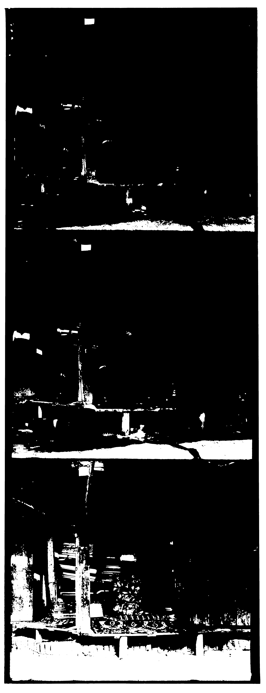
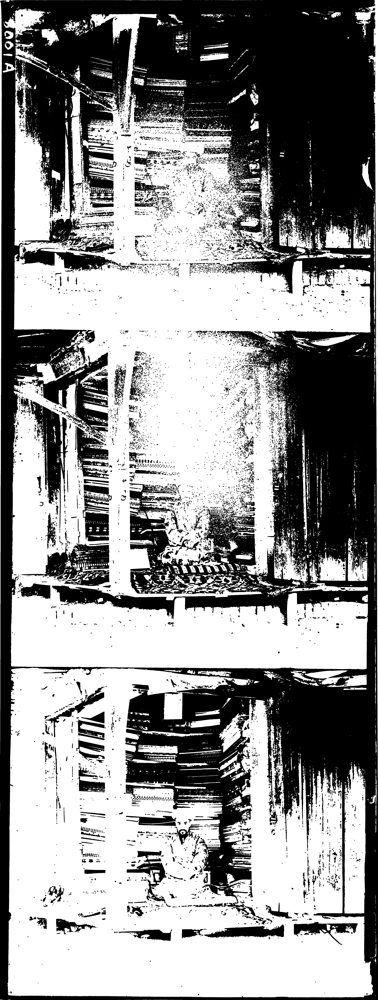
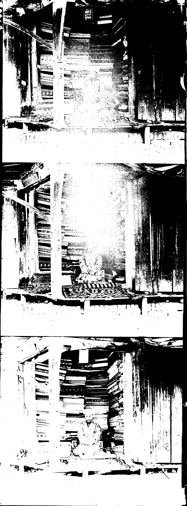

The original image (01725u.jpg)

The image processed for cropping the white border The image after cropping the white border

The image processed for cropping the outer black border The image after cropping the outer black border

The image processed for cropping the inner black borders The image after cropping the inner black borders The image channels superimposed after cropping and before any alignment The channels of the image processed to ease the alignment procedure The image after the alignment procedure The aligned image after cropping the borders formed by displacements of the channels The final aligned and slightly enhanced image